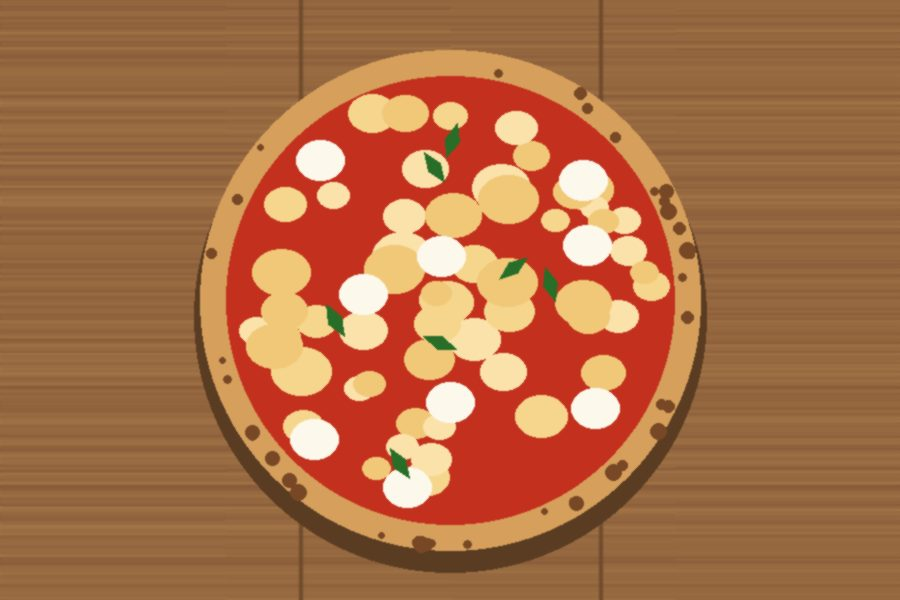

Picerija Dunavska - pica u centru Novog Sada

Picerija Dunavska radi od 2015. godine u Dunavskoj ulici, dva minuta peške od Trga slobode. Testo pravimo svaki dan i ostavljamo ga da odmara 48 sati, a picu pečemo u peći na drva. Zato je kora tanka i hrskava, kao prava italijanska pica.
Zašto baš naša pica u Novom Sadu
- pica iz peći na drva, od domaćeg testa
- pica na parče za poneti, ceo dan
- dostava pice na teritoriji Novog Sada
- bašta sa pogledom na Dunavski park (leti)
Dostava pice Novi Sad
Dostava radi svakog dana od 11 do 23 časa. Za centar grada picu donosimo za oko 30 minuta, a za Liman, Grbavicu i Detelinaru malo duže. Pre nego što poručiš, pogledaj ovde.
Radno vreme
Ponedeljak - četvrtak: 10 - 23h
Petak i subota: 10 - 24h
Nedelja: 12 - 22h
Adresu, telefon i mapu možeš da nađeš na stranici ovde.